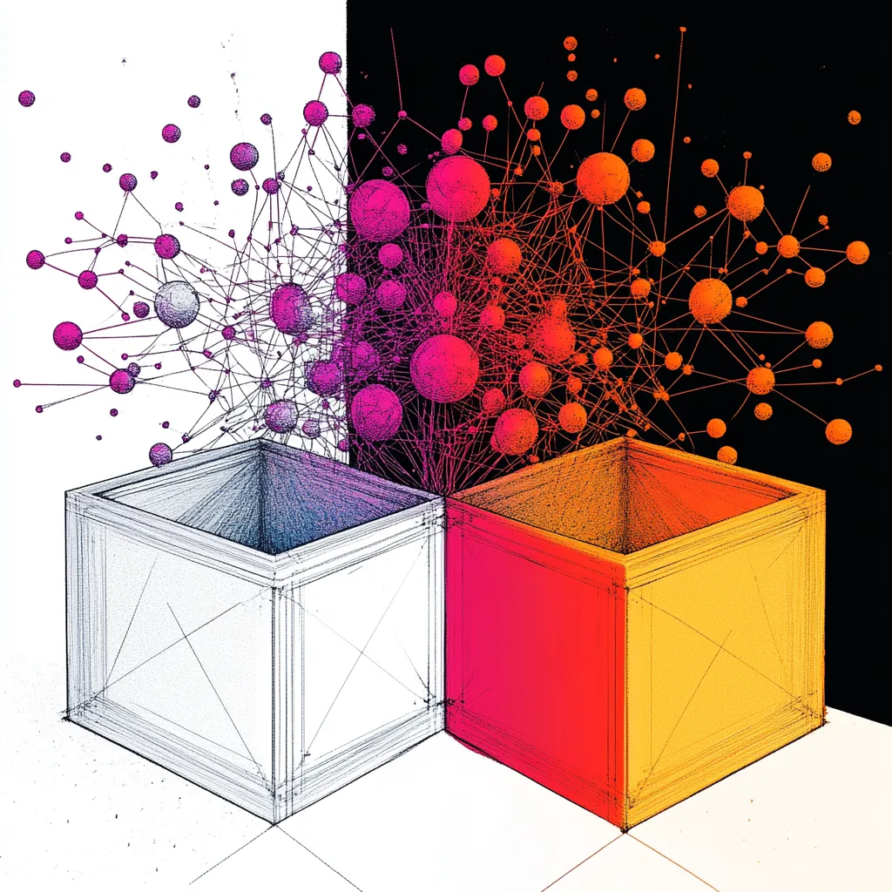

DVMs for LLM Tool Use: Democratizing AI Capabilities
DVMs upgrade tool-using LLMs from closed systems limited by built-in functions to open platforms that can discover and use new capabilities from a global network of developers.

Large Language Models (LLMs) have revolutionized how we interact with artificial intelligence, and one of their most powerful features is tool use - the ability to execute external functions to accomplish tasks. However, the current paradigm of LLM tool use remains largely constrained within closed ecosystems. Data Vending Machines (DVMs) offer an alternative to local, built-in tools through a decentralized marketplace. This decentralized approach enables independent developers to continuously create new tools, letting the entire system evolve based on actual needs.
Understanding LLM Tool Use
Tool use, also known as function calling, enables LLMs to interact with external systems and APIs. Instead of simply generating text, an LLM can choose to execute predefined functions when appropriate. For example, when asked about the weather, rather than making up a response, the model can call a weather API to get accurate, real-time data.
Traditionally, these tools are implemented as a fixed set of functions within the application’s tech stack:
# Traditional function calling example (this exists within a closed tech stack)
def get_weather(location: str, date: str) -> dict:
"""Get weather information for a specific location and date."""
api_key = os.environ["WEATHER_API_KEY"]
return weather_api.fetch(location, date, api_key)
# LLM would call this function like:
result = get_weather("San Francisco", "2024-01-31")
Enter Data Vending Machines
DVMs represent a paradigm shift in how we think about LLM tool use. Instead of relying on locally defined functions, DVMs provide a decentralized marketplace of capabilities that any LLM can access. These “functions” exist as independent services on the Nostr network, available to anyone willing to pay for their use.
Here’s how a DVM call might look compared to a traditional function call:
# partial data of an example call to a weather DVM
{
...
"kind": "5493",
"pubkey": "<LLM DVM's Npub>",
"tags": [
["payment", "100", "sats/ecash"]
],
"content": {
"service": "weather",
"params": {
"location": "San Francisco",
"date": "2024-01-31"
}
}
...
}
Note: This is a motivating example. Weather data DVMs don’t exist yet. Most DVM requests don’t include payment up front, but with ecash and zaps, it is possible to do. The format of the params may differ as well.
The Power of Market Dynamics
What makes DVMs particularly compelling for LLM tool use is their market-driven nature:
-
Competition Drives Innovation: Multiple DVMs can offer similar services, competing on price, quality, and speed. This natural competition leads to better services and lower prices.
-
Dynamic Expansion: Unlike traditional tool use where new capabilities must be explicitly added to the system, DVM-enabled LLMs can discover and utilize new tools as they become available in the marketplace.
-
Economic Incentives: DVM operators are incentivized to create and maintain high-quality services through direct monetary compensation.
Implementation Architecture
A basic implementation of a user facing DVM-based Tool Use LLM might include:
-
Manager DVM: Acts as the central coordinator, maintaining: - Conversation state and history - System prompts and user preferences - Wallet for handling payments to DVMs - Logic for DVM discovery and selection
-
User Interface: A chat interface that communicates with the manager DVM
-
LLM Service: Handles the core language model capabilities and decision-making about when to use DVMs
-
DVM Registry: Maintains a directory of available DVMs and their capabilities (like the data available on DVMDash; see naddr1qvzqqqr4gupz…z05q9v)
Advanced Capabilities
The true power of DVM-based tool use emerges when we consider advanced scenarios:
-
Self-Expanding Capabilities: When an LLM encounters a request it can’t fulfill with existing DVMs, it could: - Create bounties for new DVM development - Fund the development of new capabilities - Coordinate with multiple DVMs to compose novel solutions
-
Economic Agency: By maintaining its own wallet, the system can: - Generate revenue from user requests - Pay for DVM services - Fund its own expansion and improvement
Safety and Control
While the open nature of DVMs might raise concerns, several safety mechanisms can be implemented:
-
Human-in-the-Loop Confirmation: Users must approve DVM calls before execution, similar to how CLI tools ask for confirmation before significant actions.
-
Reputation Systems: DVMs can build reputation scores based on successful transactions and user feedback.
-
Cost Controls: Users can set spending limits and approve budgets for specific tasks.
Implications and Future Potential
The combination of Tool Use LLMs and DVMs creates a powerful new paradigm for AI capabilities:
-
Democratized Innovation: Anyone can create and monetize new AI capabilities by launching a DVM.
-
Organic Growth: The system can evolve based on real user needs and market demands.
-
Economic Sustainability: The payment mechanism ensures sustainable development and maintenance of AI tools.
Conclusion
By leveraging the Nostr protocol, DVMs enable Tool Use LLMs to access a distributed network of capabilities that would be impossible to build in a traditional, centralized way. For example, a single LLM can seamlessly use specialized tools from hundreds of independent developers - from a service that matches local freelancers to jobs to one that indexes local community events - without any prior coordination. This creates an AI ecosystem where capabilities emerge through market demand rather than central planning, with developers anywhere in the world able to add new tools that every LLM can discover and use.